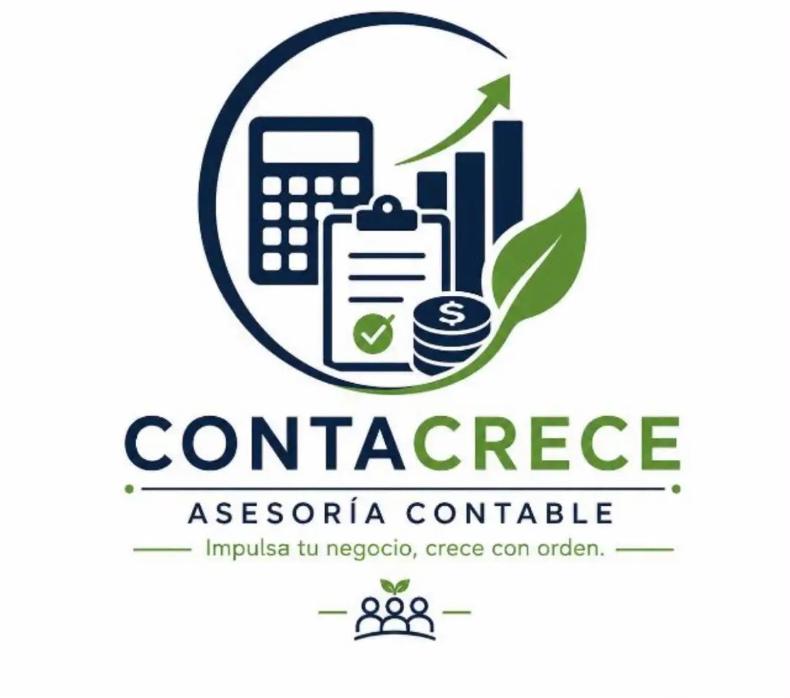
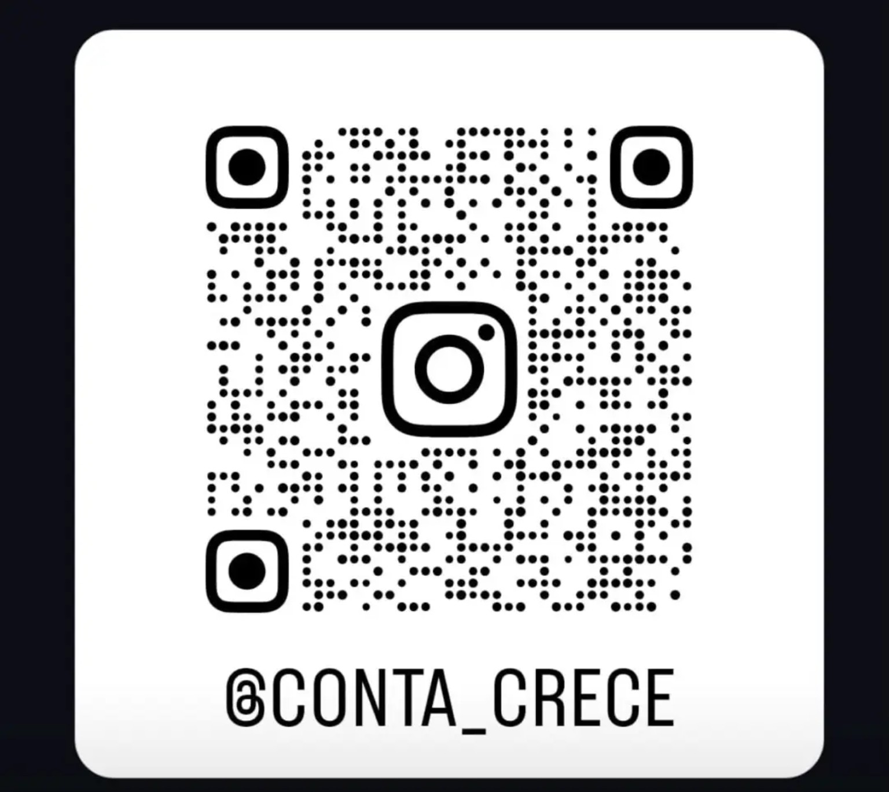

🧾
Impuestos sin enredos
Comprende conceptos como IVA, renta, retenciones y obligaciones tributarias según tu situación.
Te explicamos los temas contables y financieros con palabras sencillas, para que comprendas lo que te dice tu contador y puedas tomar decisiones con más seguridad.
Para pequeños negocios y personas naturales.

Traducimos conceptos complejos a ejemplos cotidianos para que sepas qué significan y qué preguntas hacerle a tu contador.
Comprende conceptos como IVA, renta, retenciones y obligaciones tributarias según tu situación.
Aprende qué son los ingresos, los gastos, las ganancias, el flujo de caja y los reportes contables.
Conoce ideas básicas para ordenar facturas, soportes, cuentas por cobrar y gastos del negocio.
Comprende términos y documentos relacionados con tus finanzas personales.
Prepara preguntas y entiende mejor las explicaciones para participar en las decisiones que te afectan.
Información clara, ejemplos prácticos y orientación educativa adaptada al tema que necesitas entender.
No necesitas ser contador para entender las bases de tus finanzas. Queremos ayudarte a comprender el lenguaje contable y sentirte con más confianza cuando hables de tu negocio o de tus obligaciones.
Orden, claridad y mejores preguntas para conversar con tu contador.
Claridad + organización
Un paso a la vez, a tu ritmo.
Nos cuentas qué tema te genera dudas y comenzamos desde lo básico.
Puede ser sobre tu negocio, tus documentos o un término contable que no entiendes.
Desglosamos el concepto en palabras simples y, cuando ayuda, usamos ejemplos.
Te ayudamos a organizar preguntas para tu contador y reconocer cuándo necesitas asesoría específica.
Síguenos en Instagram y escríbenos para contarnos qué necesitas entender. Queremos que el lenguaje contable sea más claro y útil para ti.
Visitar @CONTA_CRECE ↗La información de esta página es educativa y general. Las obligaciones y decisiones tributarias dependen de cada caso; confirma tu situación con un contador público autorizado.

Escanea el código con la cámara de tu celular.